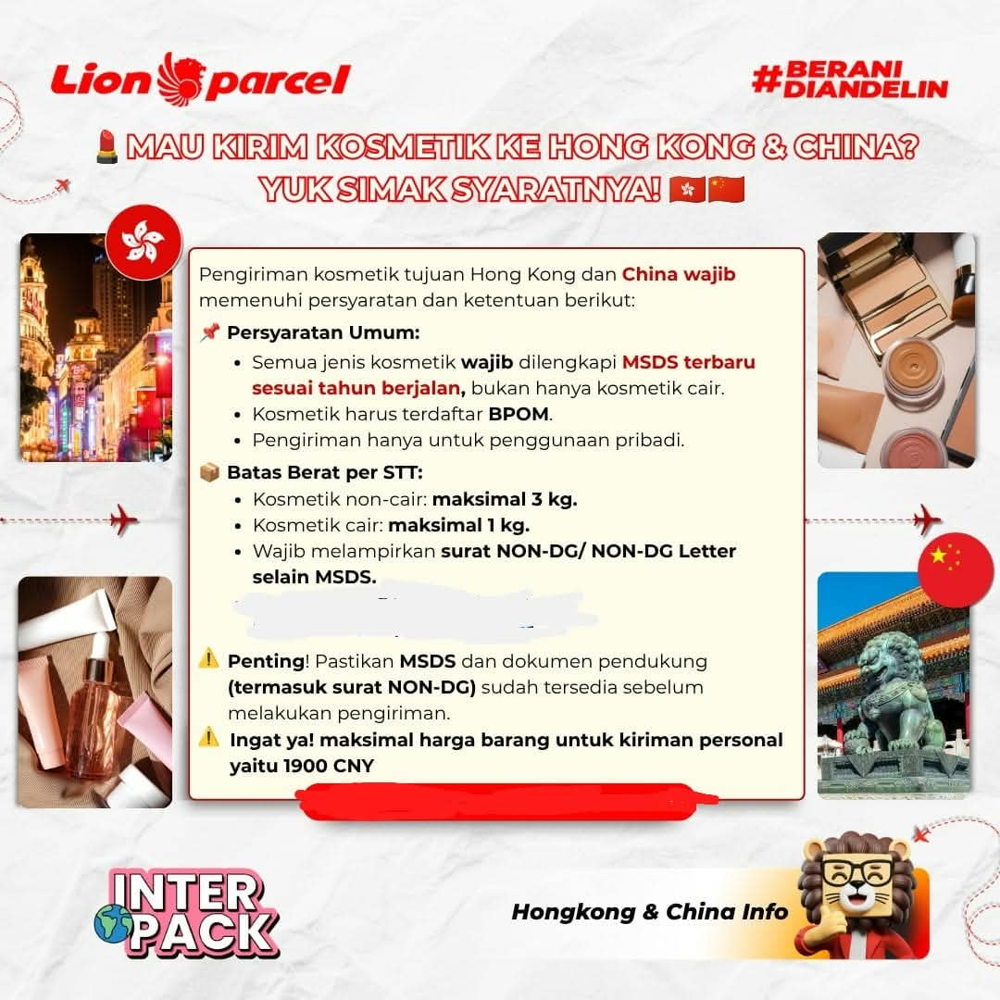

Syarat Kirim Kosmetik ke Hong Kong & China melalui INTERPACK Lion Parcel

Ingin mengirim produk kosmetik dari Indonesia ke Hong Kong atau China? Sebelum melakukan pengiriman, ada sejumlah persyaratan yang perlu dipersiapkan agar paket dapat diproses sesuai ketentuan layanan internasional.
Melalui layanan INTERPACK Lion Parcel, pengiriman kosmetik memiliki ketentuan khusus terkait dokumen keamanan produk, legalitas kosmetik, jenis barang, berat paket, hingga nilai barang yang dikirim.
Bagi kamu yang berada di Bandung, Rancaekek, Cicalengka, dan sekitarnya, informasi berikut dapat menjadi panduan awal sebelum datang ke agen Lion Parcel Bandung POS101 Nanjungmekar.
Persyaratan berikut merupakan ketentuan operasional yang menjadi acuan artikel ini. Persetujuan pengiriman tetap mengikuti pemeriksaan dokumen, karakteristik produk, dan ketentuan terbaru pihak Lion Parcel serta negara tujuan.
Mau Kirim Kosmetik ke Hong Kong atau China?
Jangan sampai dokumen belum lengkap saat datang ke agen. Konsultasikan terlebih dahulu jenis kosmetik, berat paket, dan persyaratan pengirimannya.
💬 Konsultasi via WhatsApp1. Persyaratan Umum Kirim Kosmetik ke Hong Kong dan China
Setiap produk kosmetik yang akan dikirim melalui layanan INTERPACK harus memperhatikan kelengkapan dokumen. Beberapa persyaratan utama yang perlu disiapkan antara lain:
- MSDS Terbaru: Semua jenis kosmetik wajib dilengkapi dokumen MSDS terbaru sesuai tahun berjalan, bukan hanya produk kosmetik berbentuk cair.
- Terdaftar BPOM: Produk kosmetik yang dikirim harus memiliki pendaftaran BPOM sesuai ketentuan yang berlaku.
- Peruntukan Penggunaan Pribadi: Pengiriman kosmetik mengikuti ketentuan barang untuk penggunaan pribadi, bukan untuk kepentingan komersial.
- Surat NON-DG Letter: Pengirim wajib melampirkan surat pernyataan NON-DG selain dokumen MSDS.
MSDS atau Material Safety Data Sheet merupakan dokumen yang memberikan informasi mengenai karakteristik bahan, potensi bahaya, penanganan, dan aspek keselamatan suatu produk.
Karena kosmetik memiliki komposisi bahan yang berbeda-beda, dokumen MSDS perlu disiapkan untuk membantu proses pemeriksaan barang sebelum pengiriman.
2. Batas Maksimal Berat Kosmetik per STT
Selain kelengkapan dokumen, pengirim juga perlu memperhatikan batas berat kosmetik dalam setiap STT atau Surat Tanda Terima pengiriman.
- Kosmetik Non-Cair: Maksimal 3 kg per STT.
- Kosmetik Cair: Maksimal 1 kg per STT.
Perbedaan batas berat ini perlu diperhatikan sejak proses pengemasan. Jangan menggabungkan barang melebihi ketentuan yang berlaku tanpa melakukan konsultasi terlebih dahulu dengan petugas agen.
Pastikan juga jenis produk dan komposisinya sudah diinformasikan dengan benar agar dapat dilakukan pengecekan sebelum paket diterima.
3. Batas Nilai Barang Kiriman ke Hong Kong dan China
Selain dokumen dan berat paket, terdapat ketentuan mengenai nilai barang untuk pengiriman personal.
Berdasarkan ketentuan operasional yang digunakan dalam panduan ini, batas maksimal nilai barang kiriman personal adalah:
1.900 CNY
Pastikan nilai barang yang dicantumkan sesuai dengan harga sebenarnya dan dokumen pendukung yang diminta.
Pengirim sebaiknya menyiapkan informasi harga barang sebelum melakukan transaksi pengiriman. Apabila nilai barang atau peruntukannya tidak sesuai dengan ketentuan, proses pengiriman dapat memerlukan pemeriksaan lebih lanjut.
4. Dokumen yang Sebaiknya Disiapkan Sebelum Datang ke Agen
Agar konsultasi dan proses penerimaan paket lebih praktis, berikut daftar dokumen dan informasi yang sebaiknya dipersiapkan:
- MSDS terbaru untuk produk kosmetik.
- Bukti atau informasi pendaftaran BPOM produk.
- Surat NON-DG Letter.
- Informasi jenis dan komposisi produk.
- Berat keseluruhan barang yang akan dikirim.
- Informasi nilai atau harga barang.
- Alamat lengkap penerima di Hong Kong atau China.
Dokumen tersebut dapat dikonsultasikan terlebih dahulu kepada petugas agen untuk memastikan kesesuaian dengan ketentuan pengiriman yang berlaku.
5. Lokasi Lion Parcel Bandung POS101 Nanjungmekar
Untuk pelanggan yang berada di wilayah Rancaekek, Cicalengka, Nanjungmekar, dan sekitarnya, konsultasi pengiriman internasional dapat dilakukan melalui agen Lion Parcel Bandung POS101.
📍 Lion Parcel Bandung POS101
Jl. Raya Barat Cicalengka RT 1 RW 1, Nanjung Mekar, Rancaekek, Kabupaten Bandung, Jawa Barat.
6. Pertanyaan Seputar Pengiriman Kosmetik Internasional
Apakah kosmetik bisa dikirim ke Hong Kong melalui Lion Parcel?
Pengiriman kosmetik dapat dikonsultasikan melalui layanan INTERPACK dengan memperhatikan jenis produk, dokumen MSDS, BPOM, NON-DG Letter, dan ketentuan negara tujuan.
Apakah kosmetik cair memiliki batas berat berbeda?
Ya. Berdasarkan ketentuan dalam panduan ini, kosmetik cair memiliki batas maksimal 1 kg per STT, sedangkan kosmetik non-cair maksimal 3 kg per STT.
Apakah semua kosmetik harus memiliki MSDS?
Berdasarkan ketentuan operasional yang digunakan dalam artikel ini, semua jenis kosmetik wajib dilengkapi MSDS terbaru, termasuk kosmetik non-cair.
Apakah surat NON-DG wajib dilampirkan?
Ya. Surat NON-DG Letter merupakan salah satu dokumen yang harus disiapkan selain MSDS sesuai ketentuan pengiriman yang dibahas.
Berapa batas maksimal nilai kosmetik untuk kiriman personal?
Batas nilai barang personal dalam panduan ini adalah maksimal 1.900 CNY. Pastikan ketentuan terbaru dikonfirmasi sebelum melakukan pengiriman.
Bagaimana cara konsultasi pengiriman kosmetik dari Bandung?
Kamu dapat menghubungi Lion Parcel Bandung POS101 Nanjungmekar melalui WhatsApp 0851-8309-0486 untuk menanyakan dokumen, berat, dan ketentuan pengiriman.
Kesimpulan
Pengiriman kosmetik ke Hong Kong dan China melalui INTERPACK Lion Parcel membutuhkan persiapan yang matang. Pengirim perlu memperhatikan dokumen MSDS terbaru, pendaftaran BPOM, surat NON-DG Letter, batas berat maksimal 3 kg untuk kosmetik non-cair dan 1 kg untuk kosmetik cair per STT, serta batas nilai barang personal maksimal 1.900 CNY berdasarkan ketentuan dalam panduan ini.
Jangan menunggu sampai paket tiba di agen untuk mulai mempersiapkan dokumen. Sebaiknya konsultasikan jenis produk dan kelengkapan persyaratan terlebih dahulu agar proses pemeriksaan lebih mudah.
Jika kamu berada di Bandung, Rancaekek, Cicalengka, atau wilayah sekitarnya, Lion Parcel Bandung POS101 Nanjungmekar siap membantu konsultasi awal kebutuhan pengiriman paket internasional.
Butuh Informasi Pengiriman ke Luar Negeri?
Hubungi agen kami untuk konsultasi pengiriman kosmetik, dokumen, dan persyaratan INTERPACK.
💬 WhatsApp 0851-8309-0486Informasi Agen Lion Parcel
Nama Agen: Lion Parcel Bandung POS101 Nanjungmekar Rancaekek
Alamat: Jl. Raya Barat Cicalengka RT 1 RW 1, Nanjung Mekar, Rancaekek, Kabupaten Bandung, Jawa Barat.
Jam Operasional: Senin–Minggu, 08.00–20.00 WIB
WhatsApp: 0851-8309-0486
Website: lionparcel-bandung.com